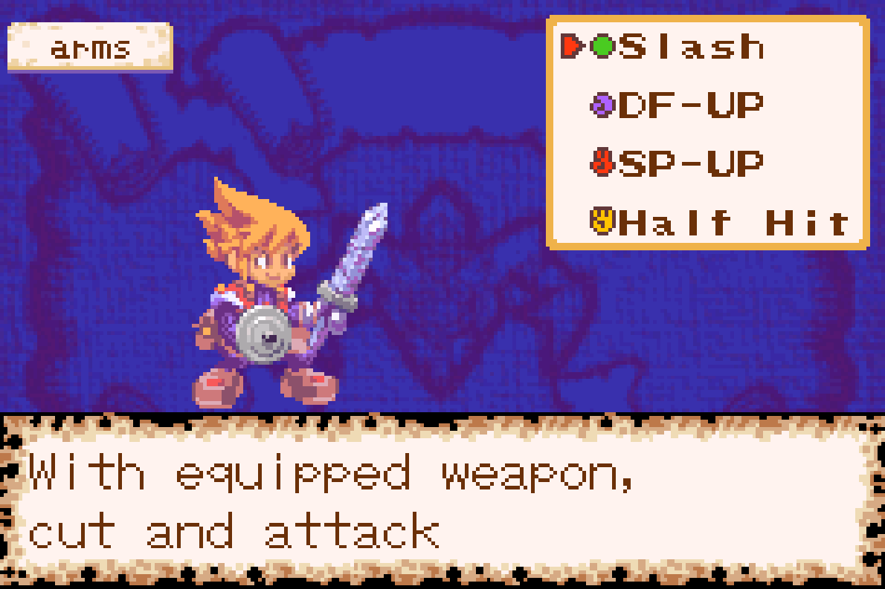
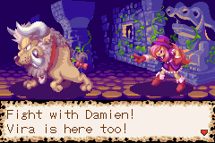

1. เกริ่นนำ & เรื่องย่อ
Dokapon เป็นเกม RPG ผจญภัยแบบเทิร์นเบส พัฒนาโดย Asmik Ace Entertainment แนวเกมใกล้เคียง Chocobo Dungeon หรือ Torneko แต่การต่อสู้เป็นแบบ “เลือกคำสั่งแล้วเข้าฉากสู้จริง” และมีระบบธาตุแบบเป่ายิ้งฉุบเป็นหัวใจสำคัญ จุดเด่นคืออาวุธและโล่จำนวนมาก แต่ละชิ้นมีสเตตัส สกิล และหน้าตาเฉพาะตัว
เนื้อเรื่อง: เด็กชายวัย 11 ปีในเมือง Poponga บนเกาะ Dokkano ซึ่งขึ้นชื่อเรื่องซากปรักหักพัง พ่อของเขา (Steven) เคยเป็นนักผจญภัยชื่อดังแต่เสียชีวิตไปแล้ว ลูกชายสืบทอดเจตนารมณ์ ตั้งใจจะเป็นนักผจญภัยที่เก่งที่สุด เด็กเมือง Poponga เมื่ออายุครบ 11 ปีจะมีสิทธิ์สอบใบอนุญาตนักผจญภัย เพื่อออกตามหา <Legendary Treasure> และ <Phantom Material> ในดันเจียนทั่วโลก มีเพียงคนที่ผ่านการทดสอบยากๆ เท่านั้นที่จะได้ใบอนุญาต
2. ตัวละคร
| ชื่อ | บทบาท |
|---|---|
| Hero | เด็กชายวัย 11 ปี ตัวเอกที่เราบังคับ (ชื่อค่าเริ่มต้น) |
| Friend | เพื่อนบ้านและเพื่อนสมัยเด็กของ Hero เป็นลูกสาวของ Tobia ความอยากรู้อยากเห็นของเธอผลักเรื่องราวไปข้างหน้า |
| Tobia | ช่างตีเหล็กประจำเมือง มีลูกศิษย์ 2 คนคือ Gustave กับ Caleb — ใช้บริการตีเหล็กได้หลังจบเควส Circus |
| Louie | นายกเทศมนตรีเมือง เคยออกผจญภัยร่วมกับ Jacob และ Steven มาก่อน |
| Priest | นักบวชประจำโบสถ์ คนเดียวที่ชุบชีวิต Hero ได้เมื่อล้มในดันเจียน |
| Steven | พ่อผู้ล่วงลับของ Hero |
| Gustave / Caleb | ลูกศิษย์ช่างตีเหล็กของ Tobia (Gustave เป็นรุ่นพี่, Caleb เป็นรุ่นน้องที่กระตือรือร้น) |
| Jacob | คนมอบหมายงาน/ภารกิจให้ Hero และจ่ายค่าตอบแทนเมื่อทำสำเร็จ (อยู่ที่ 3A) |
3. ปุ่มควบคุม
| ปุ่ม | การทำงาน |
|---|---|
| A | คุยกับชาวเมือง · ยืนยันคำสั่ง · ข้าม 1 เทิร์น (นอกการต่อสู้) |
| B | วิ่ง (กดค้างพร้อมปุ่มทิศทาง) · ยกเลิกคำสั่ง |
| R | เปิดหน้าต่างสถานะตัวละคร |
| L | เปิดหน้าต่างสถานะมอนสเตอร์พันธมิตร |
| Start | เปิดเมนูหลัก · ดูข้อมูลศัตรู (ระหว่างต่อสู้) |
| Select | ใช้ Magiceye เพื่อเปิดเผยหน้าการ์ด (Action Card) |
| ปุ่มทิศทาง | เดินได้ 8 ทิศ |
4. ในเมือง Poponga
ก่อนออกเควสทุกครั้ง แนะนำให้เดินคุยกับชาวเมืองทุกคนและนายก Louie เพื่อรับไอเทม/คำใบ้ฟรี แล้วแวะรับของตามจุดต่างๆ ด้านล่าง
| สถานที่ | รายละเอียด |
|---|---|
| Mayor's House | บ้านนายก Louie ขอคำแนะนำเกี่ยวกับเกมได้เรื่อยๆ ตามความคืบหน้า |
| Shops | ซื้อ/ขายไอเทมและอุปกรณ์ มีตัวเลือก Attack ให้ปล้นพ่อค้า (เสี่ยงสูง ดูมินิเกม) |
| Church | เมื่อล้มในดันเจียนหรือใช้ Homer จะถูกส่งกลับมาที่นี่ · คุยกับคุณยายเพื่อรับ Revival |
| Hero's House | มีตู้เสื้อผ้า (ชุด Hero / ชุด Pierrot ได้จาก Friend หลังเควส Circus), กระปุกกีวี (ฝากเงิน ขั้นต่ำครั้งละ $1000), หนังสือบนโต๊ะ (รวมสกิล/อุปกรณ์/ไอเทมทั้งหมด), และหีบเก็บของ (สูงสุด 150 ชิ้น) — เงินและของในกระปุก/หีบไม่หายแม้ Hero จะล้ม |
| Quick Smith | ของ Tobia — ที่เดียวที่ผสมอาวุธ/โล่ให้แรงขึ้นได้ (ดูหัวข้อ 10) |
| Bar | ชั้น 2 มีอดีตนักผจญภัย Rank E (ชุดน้ำเงิน-น้ำตาล) และ Rank D (ชายชราชุดเขียว) ที่มักแจกไอเทมสำคัญก่อนแต่ละเควส |
| 3A | ศูนย์รับงาน รับภารกิจจาก Jacob และมารับค่าจ้างที่นี่ · ชั้น 2 มีที่ปรึกษาอาวุโสคอยให้คำแนะนำ |
| Arena | สู้กับเพื่อน ต้องใช้เครื่อง GBA จริง 2 เครื่อง + สายลิงก์ + ตลับ 2 ตลับ (อีมูเลเตอร์เข้าไม่ได้) |
| Ranch | ฝากมอนสเตอร์พันธมิตรไว้เป็นสัตว์เลี้ยง (มีค่าบริการ) — Put ฝาก / Take รับไปดันเจียน / Free ปล่อย / Check ดูสถานะ / Cancel ออก |
5. ระบบต่อสู้ & เป่ายิ้งฉุบ

เทิร์น (Turn)
นอกการต่อสู้: เดิน 1 ก้าว = 1 เทิร์น, ใช้ไอเทม 1 ครั้ง = 1 เทิร์น ในการต่อสู้: ใช้ไอเทม หรือลงมือทำคำสั่ง 1 ครั้ง = จบเทิร์นของเรา
การ์ดเปิดฉาก (Action Card)
ทุกครั้งที่เข้าสู้ มีโอกาส 50/50 ที่จะได้โจมตีก่อน จะเห็นการ์ด 2 ใบบนจอ หมุนด้วยปุ่มทิศทาง เลือกด้วยปุ่ม A หน้าการ์ดมี “weapon” กับ “shield” เลือกการ์ด Weapon = ได้ออกอาวุธก่อน, เลือก Shield = ตั้งรับก่อน ใช้ไอเทม Magiceye เพื่อแอบดูหน้าการ์ดได้
เมนูต่อสู้
คำสั่งหลัก 3 อย่าง: Attack/Defense, Item, Escape โดย Attack/Defense จะแตกเป็นชุดคำสั่งย่อย: โจมตี/ตั้งรับพื้นฐานด้วยอาวุธ/โล่ที่สวม หรือใช้ “สกิล” ของอาวุธ/โล่ชิ้นนั้น
ธาตุเป่ายิ้งฉุบ — หัวใจของเกม
สกิลทุกตัว (ยกเว้นสกิลพื้นฐานที่มีจุดสีเขียว) มีธาตุอย่างใดอย่างหนึ่ง:
- Stone (ม่วง) — ชนะ Scissor
- Scissor (แดง) — ชนะ Paper
- Paper (เหลือง) — ชนะ Stone
ถ้าเลือกสกิลที่ธาตุ “แพ้” ธาตุสกิลของฝ่ายตรงข้ามในเทิร์นนั้น สกิลเราจะถูกลบล้าง แถมยังโดนสกิลของอีกฝ่ายใส่ด้วย เข้าใจระบบนี้แล้วเกมจะง่ายขึ้นมาก (จุดสีในเมนู: เขียว=พื้นฐาน, ม่วง=Stone, แดง=Scissor, เหลือง=Paper)
มินิเกมตีพ่อค้าใช้ระบบเดียวกัน: กดซ้าย=Stone(ม่วง) · ขวา=Paper(เหลือง) · ขึ้น=Scissor(แดง)
พันธมิตร (Ally)
ในการต่อสู้บางครั้งจะมีมอนสเตอร์ 2 ตัว ตัวที่อยู่จอเดียวกับเราคือเป้าหมายที่ต้องล้ม ตัวที่อยู่ข้างหลังเราคือพันธมิตรของเรา พันธมิตรโจมตีเองไม่ได้ แต่มี Attack Assist Skill และ Defense Assist Skill ช่วยเราตอนถึงเทิร์นเรา เฉพาะเมื่อเราเลือกใช้สกิลอาวุธ/โล่ (ถ้าใช้แค่โจมตี/ตั้งรับพื้นฐาน พันธมิตรจะไม่ช่วย) และถ้าอยากได้ Exp/เงินจากพันธมิตรของศัตรูด้วย ต้องใช้สกิลอาวุธ (เช่น Pierce) โจมตีไปที่พันธมิตรศัตรู
7. ดันเจียน · กับดัก · จับมอนสเตอร์
แผนที่ดันเจียนสุ่มทุกครั้ง มีทางเดินแคบ (corridor) และห้องกว้าง (Room) ในห้องจะมีทางออกไปชั้นถัดไป (E), ไอเทม, มอนสเตอร์ และกับดัก
กับดัก (Trap)
มองไม่เห็นด้วยตาเปล่า จะเห็นก็ต่อเมื่อเราหรือมอนสเตอร์เผลอเหยียบ ป้องกันได้ด้วยสกิล AntiTrp หรือไอเทม Anti-Trap (กันได้ไม่กี่ครั้งก่อนพัง)
| กับดัก | ผล |
|---|---|
| Poison | ติดพิษ HP ลด 1 ทุกเทิร์น |
| Sleep | หลับ ตื่นอีกหลายเทิร์นถัดมา |
| Land Mine | เหยียบแล้ว -25 HP |
| Black Out | ตาบอด ทั้งดันเจียนมืด มองเห็นแค่รัศมี 1 ก้าว |
| Cursed | คำสั่งเพี้ยน กดสกิล/เดินแล้วเกมอาจทำคนละอย่าง |
| Morph | กลายร่างเป็นมอนสเตอร์แบบสุ่ม ลงชั้นถัดไปจะกลับเป็นคน |
ประเภทมอนสเตอร์ (จากหน้าตา)
ในแต่ละเควส หน้าตากราฟิกเดียวกันจะเป็นมอนสเตอร์ตัวเดิมเสมอ เช่นงูเขียวใน Ruin Part 1 = Snaky, ลิงเหลืองใน Forest Part 2 = Monkey4
| หน้าตา | เป็นได้ |
|---|---|
| งูเขียว | Strider, Viper, Imago |
| ค้างคาวน้ำเงิน | ToothBat, SwordBat, Skully |
| หีบมิมิค | OldFish, FireKeg, TableDog |
| ลิงเหลือง | Monkey4 |
| นกฮูก | Owl, G-Bird, Flamingo, Peacock, Ostrich |
| คางคกเขียว | Fickler |
| สัตว์ขนแดง-เหลือง | RedTiger, C-Dog, W-Tail |
| ตัวคลุมสีน้ำตาล | Lancer, Beard, OldMask, FatMask, Witch |
| โกเลมเทา | Croco |
| โจรสลัด | B-Patchy, Squashy |
| ร่างมนุษย์ | Kane |
| ผี | B-Spirit, GhostArm, Candler |
| โครงกระดูกหัวแดง | Bone-Rat |
| ปูแดง | Mantis |
| ผึ้ง 3 ตัว | Bee Moth |
จับมอนสเตอร์เป็นพันธมิตร
- เตรียม Food (เหยื่อล่อ), Trapper (กับดัก) และควรมี Homer ติดตัว
- หามอนสเตอร์ที่ต้องการ วาง Trapper พร้อมเหยื่อ Food (วางในทางเดินก็ได้ อาจต้องลองหลายรอบ)
- เมื่อมอนสเตอร์ติดกับ (จะหมุนติ้วอยู่ในกับดัก) เข้าสู้
- เอาชนะมัน แล้วเลือกให้มันเข้าร่วม (บอสเข้าร่วมไม่ได้)
เทคนิค: หนีจากการต่อสู้ก่อน แล้วระหว่าง Hero กระพริบตัว ให้เดินห่างมอนสเตอร์แต่อยู่ในห้องเดิม วางกับดัก แล้วกด A รัวๆ เพื่อล่อ · มอนสเตอร์พันธมิตรอัปเลเวลได้จากการสู้เคียงข้างเรา แต่ถ้าตายในสนามคือหายถาวร · สกิลของมันสุ่ม ถ้าได้ No Blow / Halo ถือว่าโชคดีมาก
8. เดินเรื่องทุกเควส
ตอนนี้มีรายละเอียดชั้น/มอนสเตอร์ครบถึงเควส Ruin Part 1 และ SE-Point (Lighthouse) · ส่วน Circus / Forest Part 2 / Ruin Part 2 ยังไม่มีรายละเอียดชั้น จะทยอยเพิ่มภายหลัง

Prologue + มินิเกม “ตีพ่อค้า”
เรื่องเริ่มที่เมือง Poponga เด็กชายอายุครบ 11 ปี เดินไปที่ 3A เพื่อสอบเป็นนักผจญภัย
Attack Shopkeeper: ที่ร้านค้าเลือก Attack ได้ พ่อค้าจะถามยืนยัน ถ้าเอาจริงจะเข้าเกมเป่ายิ้งฉุบ
ชนะ = ได้ไอเทม/อาวุธ/โล่แบบสุ่ม 1 ชิ้น · แพ้ = พ่อค้าเรียกยาม (มี 6 คน เติมใหม่เรื่อยๆ เมื่อออก-เข้าจอ)
เราจะถูกไล่ วิ่งรอบเมืองได้แต่สุดท้ายจะโดน Guardman จับเข้าสู้ (ไม่มีคำสั่งหนี)
ถ้าเจอ 2 คน (BigBoss + Guardman) แทบเอาตัวไม่รอด เลเวลต่ำโดนตีทีละ 1 HP
ถ้ารอดมาได้ ให้รีบออกจากเมืองไป Mine ลงไป B4F แล้วใช้เครื่องเทเลพอร์ตออก จะวาร์ปกลับโบสถ์และเมืองกลับเป็นปกติ
เควส 1 — The Mine
เตรียมตัว: คุยชาวเมือง + นายก Louie / ชั้น 2 Bar คุย Rank D รับ Recover1 / โบสถ์คุยคุณยายรับ Revival / แวะร้านค้า แล้วไป 3A รับงานจาก Jacob: เอา <Diramond> จากเหมือง · ระวังบอส Boss Mole · ทางออกอยู่ทางใต้ของเมือง
| ชั้น | มอนสเตอร์ |
|---|---|
| B1F | Spore, Weasel |
| B2F | Spore, Weasel, Miner1, Miner2 |
| B3F | Miner1, Miner2, Strider |
| B4F | Boss Mole (บอส) |
เลเวลแนะนำ: Lv1–7 · เซฟและฮีลให้เต็มก่อนลง B4F เพราะพอถึงชั้นจะเข้าสู้บอสทันทีไม่มีจังหวะฮีล ชนะแล้วได้ <Diramond> และออกจากดันเจียนอัตโนมัติ
หลังจบเควสนี้กลับมาฟาร์มเลเวลได้ · สู้ Boss Mole ซ้ำได้ (รอบนี้มีพันธมิตร Phon-Du) จบแล้วมันจะพูดว่า “Bring Keiko and come back anytime”
เควส 2 — Forest Part 1
เตรียมตัว: คุยชาวเมือง · โบสถ์รับ Revival · ชั้น 2 Bar รับ Trapper จาก Rank D · ร้านค้าซื้อ Food → เริ่มลองจับมอนสเตอร์เป็นพันธมิตรได้แล้ว
เป้าหมาย: พาลูกสาวของ Tobia กลับบ้าน · เลเวลแนะนำ: Lv7–11
| โซน | มอนสเตอร์ |
|---|---|
| Area 1 | Viper, WoodStag, Owl |
| Area 2 | Viper, WoodStag, Owl, G-Bird |
ผ่าน 2 โซนป่าไปจะเจอฉาก Friend แอบดูใครบางคนอยู่หลังเสา คนนั้นเดินเข้าซากปรักหักพัง Friend อยากรู้เลยตามเข้าไป เราจำเป็นต้องตามเข้าไปในซาก (ต่อเนื่องเป็นเควส 3)
เควส 3 — Ruin Part 1
เป้าหมาย: พาลูกสาวของ Tobia กลับบ้าน · เลเวลแนะนำ: Lv11–14
| ชั้น | มอนสเตอร์ |
|---|---|
| B1F | Owl, Ostrich, ToothBat |
| B2F | Owl, Ostrich, ToothBat, Lancer, Leafman |
| B3F | Ostrich, ToothBat, Lancer, Leafman, LeafGang |
| B4F–B6F | ToothBat, Lancer, Leafman, LeafGang, Beard |
| B7F | Patchy, Damien, Vira (บอส) |
ลึก 7 ชั้น ฟาร์มเลเวลให้ดีเพราะเจอบอส 2 ยกติด: ยกแรกโจรสลัด 2 ตัว (Patchy) ตามด้วยบอสใหญ่ (Damien + Vira) แต่ละยกมีพันธมิตรช่วย จบแล้วถูกพากลับเมืองรับค่าจ้างจาก Jacob
เควส 4–6 — Circus / Forest Part 2 / Ruin Part 2
ยังไม่มีรายละเอียดชั้น/มอนสเตอร์ของ 3 เควสนี้ (จะทยอยเพิ่มภายหลัง) เท่าที่รู้ตอนนี้: หลังจบ Circus ถึงจะใช้บริการช่างตีเหล็กได้ และได้ชุด Pierrot จาก Friend · มอนสเตอร์ประจำ Forest Part 2 เช่น Monkey4 (ลิงเหลือง) · Special Item เริ่มดรอปหลังจบ Ruin Part 2 · บอสที่เกี่ยวข้องช่วงนี้: Golem / BigCroco (Forest Part 2), A-Damien (Circus), MaskBird / Laboss
เควส 7 — SE-Point (ประภาคาร / Lighthouse)
เตรียมตัว: คุย Friend รับ CurseOff · Rank D ชั้น 2 Bar รับ Invisi · ควรพก Store-It, Homer, Food, Trapper
เป้าหมาย: จุดไฟประภาคาร · เลเวลแนะนำ: Lv24–26
| ชั้น | มอนสเตอร์ |
|---|---|
| 1F–2F | FireKeg, TableDog, B-Spirit, Bone-Rat, Skully, Squashy |
| 3F | + C-Dog, Imago |
| 4F | + C-Dog, Imago, Witch |
| 5F | ไม่มีมอนสเตอร์ — มีเครื่องเทเลพอร์ตกลับเมือง (เติมของ/ตีเหล็กได้ที่นี่) |
| 6F | B-Spirit, Bone-Rat, C-Dog, Imago, Witch |
| 7F | + Mantis |
| 8F | + Mantis, Bee Moth, W-Tail, GhostArm |
| 9F | B-Spirit, Bee Moth, GhostArm, Candler |
| 10F | B-Spirit, Marshy, L-Marshy (บอส) |
ที่ทางเข้าประภาคาร Marshy โผล่มาขวาง→ สู้ ชนะแล้วมันหายไปเปิดทางให้ ประภาคารมี 10 ชั้น มอนสเตอร์บางตัวมีสกิลอาวุธฆ่าเราได้ในตีเดียว ชั้น 6 ขึ้นไปของมีค่ามากขึ้น พก Store-It ไว้จะได้เปรียบ · GhostArm ดรอป Dark-S · Mantis สเตตัสดี น่าจับ
ชั้น 9: ฮีลให้เต็ม เจอบอส 2 ยกติด — Marshy + พันธมิตร B-Spirit แล้ว L-Marshy + น้อง Marshy ชนะ L-Marshy แล้วจุดไฟได้ กลับเมืองรับ 8000 เงินจาก Jacob ซึ่งจะแนะนำให้ไปขออนุญาตนายก Louie เพื่อขึ้นเขาไปท้า Tower สอบใบอนุญาต Rank D
เควส 8 — Tower
ทำธุระในเมืองตามปกติ ไปชั้น 2 Bar คุย Rank D รับ Homer · (รายละเอียดชั้นของ Tower จะเพิ่มภายหลัง)
9. บอสทางเลือก (โหดมาก)
BigBoss และ Guardman เป็นบอสทางเลือก ไม่ต้องล้มก็จบเกมได้ เจอตอนปล้นพ่อค้าแล้วแพ้ · ถ้าแพ้จะเสียไอเทมทั้งหมดในกระเป๋า ที่ Lv50 ก็แทบเป็นไปไม่ได้ ต้องอาศัยดวงล้วนๆ ว่ามันจะไม่ใช้โจมตีพื้นฐาน (ซึ่งมักฆ่าเราตีเดียว)
บอสทางเลือก
BigBoss
HP 325–375
บอสทางเลือก
Guardman
HP 225–260
การ์ดเทียบสถิติคร่าวๆ (จัดทำขึ้นประกอบบทสรุป ไม่ใช่ภาพจากเกม)
| BigBoss | Guardman | |
|---|---|---|
| HP | ~325–375 (แปรตามเลเวลเรา) | ~225–260 |
| สกิลอาวุธ | Smasher, 2X Smash(ม่วง), DF-Lock2(แดง), Big Bomb(เหลือง) | Knuckler, A-Smash(ม่วง), AT-Lock(แดง), LimitHit |
| สกิลโล่ | Yell, HardWall(ม่วง), 2X Back(แดง), Restore(เหลือง) | Duck, BombWall(ม่วง), FallBack(แดง), FullCure(เหลือง) |
กลยุทธ์ (ใช้ได้กับทั้งคู่):
- ก่อนสู้ ใช้ Harder ใส่ตัวเอง · ควรมี Magiceye, Recover2, Harder อย่างละ 2
- ต้องได้โจมตีก่อน 3 เทิร์นแรกยิงตามลำดับ: 1/5 Hit → Defender → 1/5 Hit
- อย่าใช้โจมตีพื้นฐานเด็ดขาด (เข้าแค่ 1–2 HP)
- หลังจากนั้นเหลือ ~10–13 HP → ปิดท้ายด้วย 1/2 Back
ทางเลือก (Guardman): 1/5 Hit → Defender → Risk Hit — ใช้เมื่อมั่นใจว่าเหลืออีก 1 เทิร์นชนะ และได้ผลเฉพาะตอนมันเลือกตั้งรับพื้นฐาน (Risk Hit เข้า ~64 HP)
สกิลแนะนำสำหรับสู้บอสกลุ่มนี้: อาวุธ = Risk Hit(ม่วง), 1/5 Hit(แดง) · โล่ = 1/2 Back(ม่วง), Defender(แดง), FullCure(เหลือง)
Marshy (บอสประภาคาร) — สกิลแนะนำ: อาวุธ Triple(ม่วง)/HealGet(แดง) · โล่ Mega-Up(ม่วง)/Defender(แดง)/FullCure(เหลือง)
10. ช่างตีเหล็ก · สูตรผสม
ตัวอย่างสูตรผสม 1 สูตรจากตารางด้านล่าง (จัดทำขึ้นประกอบบทสรุป ไม่ใช่ภาพจากเกม)
เงื่อนไข: ต้องมีอาวุธ/โล่อย่างน้อย 2 ชิ้นในกระเป๋า และมีเงินพอ · คุยกับ Tobia ที่ Quick Smith (ปลดล็อกหลังเควส Circus)
เลือกอาวุธ/โล่ 2 ชิ้น ผลลัพธ์โชว์ทางขวา ถ้าพอใจกด OK แล้วหักเงิน วางชิ้นที่อยากเก็บสกิลไว้เป็น “ชิ้นที่ 1” (ชิ้นฐาน) ตอนได้สกิลจะเลือกสลับสกิลของผลลัพธ์กับสกิลของชิ้นฐานได้ ถ้าชิ้นที่ 2 ขึ้นไฮไลต์สีน้ำเงิน = คู่ที่ดีที่สุด (ได้เวอร์ชันอัปเกรดหรือฟอร์มแรงกว่า เช่น X-Sword + RedSword = XX-Sword) · การสร้างจะบันทึกผลลัพธ์ลงเซฟทันที (รีเซ็ตก็ไม่หาย)
สูตรผสมอาวุธ (เรียงตามผลลัพธ์)
| อาวุธ 1 | อาวุธ 2 | ผลลัพธ์ |
|---|---|---|
| RedSword | G-Bow / S-Sword | X-Sword |
| Magic Rod | Red Ax | X-Sword |
| X-Sword | RedSword | XX-Sword |
| Heavy Ax | G-Bow | S-Sword |
| Shelly | Tomahawk | Trident |
| Magic Rod | WaterGun | Trident |
| XX-Sword | Eggy / Rock-It | Trident |
| XX-Sword | Tomahawk | RedSword |
| BatSpear | X-Sword | RedSword |
| XX-Sword | X-Sword | L-Spear |
| XX-Sword | RedSword | G-Bow |
| Magic Rod | IronCraw | G-Bow |
| XX-Sword | S-Sword | Gear Ax |
| Shelly | Red Ax / S-Sword | Gear Ax |
| D-Hand | X-Sword / Barrel / IronClaw | Gear Ax |
| Eggy | Rock-It | Gear Ax |
| Gear Ax | BatSpear | Heavy Ax (057) |
| Eggy | Tomahawk | Barrel |
| Heavy Ax | S-Sword | Barrel |
| Shelly / W-Sword / Moon Bow | X-Sword / D-Hand | BatSpear |
| W-Sword | Tomahawk | HalBerd (043) |
| W-Sword / Revolver / BatSpear | Gear Ax / RedSword | Moon Bow (090) |
| Magic Rod | G-Bow | Moon Bow |
| Heavy Ax | X-Sword / Shelly | G-Chain (076) |
| Moon Bow | Barrel | G-Chain |
| Moon Bow | RedSword | Star Rod (069) |
| Magic Bow | Shelly | Star Rod |
| Revolver | TriSword | S-Spear (044) |
| Moon Bow | X-Sword | S-Spear |
| Moon Bow | WaterGun / Red Ax | Fang (006) |
| Moon Bow | Red Ax | Cross (008) |
| Moon Bow | Tomahawk | Arabic |
| Hatchet | S-Sword / Magic Rod | Tomahawk |
| BatSpear | D-Hand | Tomahawk |
| Heavy Ax / Gear Ax | Tomahawk / Shelly | Ring Ax |
| Gear Ax | X-Sword | Spike |
| Magic Rod / Revolver / D-Hand | Saw / Trident / RedSword | Shelly |
| D-Hand / BatSpear / Heavy Ax | G-Bow / Shelly / RedSword | PenKnife |
| BatSpear / D-Hand | G-Bow / Heavy Ax / Star Rod | Dagger |
| D-Hand | Tomahawk | TriSword |
| TriSword / BatSpear / Heavy Ax | Gear Ax / S-Sword / Red Ax | D-Hand |
| BatSpear / Moon Bow | Tomahawk / Gear Ax | Eggy |
| BatSpear / Revolver | Red Ax / Tomahawk | W-Sword (024) |
| W-Sword | Buring | Revolver (083) |
| Revolver | D-Hand | Red Ax |
| Star Rod | Ocarina | IronBall |
| Star Rod | Gear Ax | Bowie |
| Star Rod | Tomahawk | Magic Rod (068) |
| Buring / Magic Rod | XX-Sword / S-Sword | Sceptor2 (067) |
| Magic Rod | Barrel | Paw (093) |
| Magic Rod | Bowie | Lance |
สูตรผสมโล่ (เรียงตามผลลัพธ์)
| โล่ 1 | โล่ 2 | ผลลัพธ์ |
|---|---|---|
| Mirror-S | Face-S | Shield |
| Mirror-S | Plume-S | Metal-S (030) |
| Mirror-S / Guard-S | Buckler3 / Oak-S | Buckler |
| Mirror-S | Pirate-S | Buckler2 |
| Guard-S | Steel-S | Peacock |
| Peacock | Iron-S | Plume-S |
| Peacock / Mirror-S / Guard-S | Kiwi-S / Oak-S / Guard | Bird-S |
| Guard-S | Face-S / Plume-S | Scale-S |
| Peacock | Slate-S | Shell-S |
| Peacock | Oak-S / Buckler1 | Wood-S |
| Peacock | Buckler2 | Oak-S |
| Peacock / Guard-S | Mask-S / Slate-S | Pirate-S |
| Peacock / Guard-S | Steel-S / Face-S / Iron-S / Pirate-S | Buckler3 |
| Mirror-S / Horse-S / Crystal | Slate-S / Kiwi-S / Crystal / Face-S | Dark-S |
| Horse-S | Kiwi-S | Bull-S |
| Horse-S / Bolt-S | Pirate-S / Buckler3 | Steel-S |
| Pirate-S | Buckler3 | Face-S |
| Bolt-S / Mirror-S | Pirate-S / Horse-S / Steel-S | Iron-S |
| Buckler3 / Guard-S | Kiwi-S / Crystal / Buckler3 | Guard |
| Crystal | Guard | Guard-S |
| Guard / Guard-S / Dark-S / Mirror-S | Kiwi-S / Horse-S / Pirate-S / Guard / Iron-S | Bolt-S |
| Dark-S | Crystal | Slate-S |
| Guard-S / Mirror-S | Kiwi-S / Guard | Crystal |
| Guard-S / Crystal | Dark-S / Horse-S | Mirror-S |
| Face-S | Buckler2 | Mask-S |
สูตร Special Item (Guard)
| ชิ้น 1 | ชิ้น 2 | ผลลัพธ์ |
|---|---|---|
| P-Guard | P-Guard | N-Guard |
| P-Guard | A-Guard | O-Guard |
| O-Guard | K-Guard | A-Guard |
| K-Guard | A-Guard | P-Guard |
11. ตารางอ้างอิง
Monster Album (เฉพาะที่มีข้อมูล · ชื่อในวงเล็บ [ ] = บอส)
| No. | Name | Lv | HP | Exp | Money | AT | DF | SP | ดรอป |
|---|---|---|---|---|---|---|---|---|---|
| 001 | Spore | 1 | 3 | 1 | 5 | 3 | 2 | 1 | |
| 002 | Weasel | 1 | 5 | 2 | 8 | 4 | 3 | 4 | |
| 003 | Miner1 | 2 | 5 | 3 | 16 | 7 | 6 | 5 | |
| 004 | Miner2 | 2 | 8 | 3 | 13 | 9 | 4 | 5 | |
| 005 | P-Bear | 3 | 15 | 4 | 10 | 10 | 7 | 3 | |
| 006 | Slime | 3 | 12 | 4 | 11 | 8 | 5 | 9 | |
| 007 | Mushy | 4 | 16 | 5 | 12 | 9 | 10 | 6 | |
| 008 | Mole | 5 | 17 | 6 | 15 | 12 | 13 | 6 | |
| 009 | Phon-Du | 5 | 20 | 8 | 22 | 15 | 15 | 8 | |
| 010 | Strider | 6 | 14 | 10 | 3 | 17 | 5 | 15 | |
| 011 | [Boss Mole] | 9 | 25 | 28 | 60 | 22 | 17 | 14 | |
| 012 | Viper | 6 | 19 | 7 | 15 | 17 | 12 | 10 | |
| 013 | WoodStag | 7 | 26 | 8 | 13 | 15 | 20 | 5 | |
| 014 | Owl | 7 | 18 | 10 | 20 | 19 | 16 | 15 | |
| 015 | Leafman | 8 | 25 | 11 | 16 | 20 | 19 | 4 | |
| 016 | Snaky | 9 | 33 | 10 | 22 | 23 | 8 | 11 | |
| 017 | Ostrich | 10 | 22 | 13 | 25 | 21 | 16 | 26 | |
| 018 | Toothbat | 10 | 35 | 14 | 30 | 25 | 18 | 20 | |
| 019 | Lancer | 11 | 38 | 17 | 28 | 24 | 25 | 18 | Spear |
| 020 | G-Bird | 11 | 40 | 16 | 33 | 27 | 26 | 19 | |
| 021 | Beard | 12 | 37 | 20 | 37 | 22 | 32 | 15 | |
| 022 | Leafer | 13 | 42 | 24 | 46 | 29 | 33 | 23 | |
| 023 | LeafGang | 14 | 48 | 28 | 51 | 32 | 37 | 26 | |
| 024 | [Patchy] | 15 | 55 | 30 | 36 | 36 | 40 | 22 | |
| 025 | [Damien] | 18 | 70 | 42 | 115 | 45 | 31 | 20 | |
| 026 | [Vira] | 18 | 60 | 50 | 0 | 40 | 33 | 27 | |
| 027 | Twirier | 13 | 45 | 22 | 56 | 26 | 29 | 20 | |
| 028 | Moo Shu | 14 | 32 | 25 | 70 | 30 | 40 | 11 | |
| 029 | Assassin | 15 | 42 | 26 | 68 | 35 | 25 | 29 | IronClaw |
| 030 | IronLion | 15 | 53 | 28 | 72 | 33 | 39 | 22 | |
| 031 | Juggler | 16 | 47 | 31 | 77 | 32 | 33 | 24 | |
| 032 | Jacky | 16 | 51 | 30 | 82 | 35 | 32 | 28 | |
| 033 | Minie | 17 | 18 | 33 | 90 | 44 | 28 | 33 | |
| 034 | Unicorn | 18 | 64 | 38 | 60 | 38 | 35 | 21 | |
| 035 | Godfire | 18 | 58 | 38 | 81 | 46 | 38 | 20 | |
| 036 | Bomber | 19 | 56 | 36 | 85 | 42 | 40 | 23 | |
| 037 | B-Patchy | 20 | 60 | 40 | 36 | 41 | 39 | 30 | |
| 038 | [W-Patchy] | 20 | 66 | 44 | 36 | 43 | 32 | 27 | |
| 040 | [A-Damien] | 25 | 108 | 68 | 580 | 60 | 62 | 8 | |
| 041 | [Vira] | 29 | 77 | 73 | 0 | 68 | 60 | 44 | |
| 042 | Flamingo | 20 | 50 | 42 | 84 | 39 | 45 | 29 | |
| 043 | Peacock | 22 | 61 | 43 | 108 | 43 | 45 | 32 | Peacock-S |
| 044 | Monkey4 | 23 | 64 | 45 | 91 | 46 | 41 | 26 | |
| 045 | Swordbat | 24 | 57 | 45 | 99 | 50 | 33 | 35 | |
| 046 | Kane (Human) | 25 | 70 | 48 | 111 | 55 | 50 | 28 | |
| 047 | Fickler | 26 | 55 | 51 | 101 | 58 | 47 | 13 | |
| 048 | RedTiger | 26 | 75 | 57 | 115 | 64 | 42 | 30 | |
| 056 | [MaskBird] | 35 | 90 | 80 | 111 | 70 | 55 | 39 | |
| 057 | [BigCroco] | 37 | 116 | 88 | 137 | 76 | 115 | 1 | |
| 058 | [Laboss] | 42 | 158 | 95 | 200 | 81 | 67 | 33 | |
| 059 | Bone-Rat | 32 | 71 | 75 | 122 | 57 | 44 | 44 | Food |
| 060 | FireKeg | 33 | 90 | 77 | 134 | 61 | 40 | 19 | Barrel |
| 061 | TableDog | 34 | 108 | 79 | 131 | 65 | 70 | 28 | Speeder |
| 062 | Squashy | 35 | 83 | 80 | 36 | 63 | 50 | 36 | Food |
| 063 | Skully | 36 | 69 | 80 | 137 | 72 | 56 | 39 | Compass |
| 064 | Imago | 37 | 125 | 84 | 142 | 68 | 53 | 21 | Harder |
| 065 | C-Dog | 38 | 103 | 85 | 150 | 77 | 48 | 42 | Antidote |
| 066 | Witch | 39 | 111 | 87 | 166 | 67 | 57 | 38 | Trapper |
| 067 | W-Tail | 39 | 104 | 87 | 157 | 65 | 55 | 49 | Fizzade |
| 068 | Bee Moth | 40 | 116 | 90 | 163 | 76 | 60 | 53 | Antidote |
| 070 | GhostArm | 41 | 142 | 95 | 180 | 86 | 67 | 35 | Dark-S |
| 071 | Candler | 41 | 130 | 95 | 193 | 83 | 65 | 46 | Store-It |
| 072 | B-Spirit | 42 | 100 | 63 | 10 | 80 | 35 | 28 | |
| 073 | [Marshy] | 43 | 88 | 78 | 10 | 65 | 43 | 46 | Magiceye |
| 074 | [L-Marshy] | 48 | 158 | 111 | 358 | 97 | 70 | 31 | Revival |
| 133 | [Guardman] | 91 | 260 | 378 | 5 | 126 | 120 | 61 | Food |
| 134 | [BigBoss] | 99 | 325 | 393 | 15 | 207 | 195 | 102 | Trapper |
| 151 | Kiwi | 1 | — | — | — | — | — | — | Kiwi-S |
No.133/134 เจอได้เฉพาะตอนปล้นพ่อค้า · No.046 (Forest Part 1) และ No.150 (Forest Part 2) เป็นมอนสเตอร์พิเศษที่เลี่ยงการต่อสู้ (No.150 มักยอมแพ้ตลอด)
Weapon Album (เฉพาะที่มีข้อมูล · ATK / SP / ราคา)
| No. | Name | ATK | SP | Cost | Status | สกิล |
|---|---|---|---|---|---|---|
| 001 | Knife | 5 | 3 | 40 | ||
| 002 | Bowie | 13 | 5 | 157 | ||
| 003 | Dagger | 25 | 6 | 200 | ||
| 004 | PenKnife | 42 | 7 | 490 | ||
| 005 | D-Hand | 61 | 8 | 780 | ||
| 006 | Fang | 89 | 13 | 1665 | ActUp | |
| 008 | Cross | 112 | 12 | 2150 | ||
| 009 | Thrower | 122 | 17 | 2500 | Slash / Pirate / Swallow1 / Stun Hit | |
| 012 | Sword | 3 | 0 | 5 | ||
| 013 | CuSword | 8 | 2 | 60 | ||
| 015 | Saw | 24 | -4 | 200 | ||
| 016 | R-Blade | 30 | 8 | 280 | Slash / SP-Up / Jump Hit / Double | |
| 017 | S-Sword | 40 | -5 | 300 | ||
| 018 | RedSword | 45 | 13 | 450 | AntiTrp | |
| 019 | X-Sword | 57 | -5 | 625 | ||
| 020 | XX-Sword | 60 | 5 | 1000 | ||
| 021 | TriSword | 80 | 3 | 1200 | Slash / AT-Up / Double / 1/3 Hit | |
| 022 | OldSword | 90 | -3 | 1340 | Slash / DF-Up / BlackOut / Curse | |
| 023 | B-Dagger | 97 | 2 | 1600 | Slash / Pierce / 1/5 Hit / Risk Hit | |
| 024 | W-Sword | 100 | 18 | 1875 | ActUp | Slash / SP-Up / Tripple / Swallow2 |
| 027 | Katana | 135 | -6 | 3060 | Slash / Oni / Tiger / Last One | |
| 028 | GodFang | 140 | 10 | 3800 | Revive | Slash / Last One / Hellkiss / Red Bull |
| 037 | Bamboo | 10 | -3 | 80 | ||
| 038 | Spear | 20 | -2 | 175 | ||
| 039 | Spike | 26 | -1 | 215 | ||
| 041 | Trident | 73 | -1 | 850 | Thrust / Sting / Quicker / W-Stab | |
| 042 | BatSpear | 78 | 5 | 1100 | X-Ray | |
| 043 | HalBerd | 87 | -4 | 1100 | ||
| 044 | S-Spear | 108 | 9 | 1850 | ||
| 046 | Partisan | 129 | 7 | 2600 | Swing / Curse / HealGet / Pounder2 | |
| 047 | Thunder | 137 | 12 | 3500 | ActUp | Thrust / Flash / DF-Down / Laser |
| 048 | UniSpear | 168 | 5 | 4000 | HPRecov | Thrust / Forget3 / Gamble / W-Stab |
| 051 | Hatchet | 21 | -1 | 180 | ||
| 053 | Tomahawk | 44 | -5 | 330 | ||
| 054 | Ring Ax | 50 | -7 | 375 | ||
| 055 | Red Ax | 60 | -6 | 550 | ||
| 056 | Gear Ax | 68 | -8 | 750 | ||
| 057 | Heavy Ax | 90 | -12 | 1375 | ActDown | Smasher / Plunder1 / RiskHit2 / DF-Seal2 |
| 058 | Large Ax | 112 | 11 | 2000 | Smasher / CoolDown / Plunder2 / Twice | |
| 059 | Butcher | 118 | -5 | 2200 | Darkness | Smasher / BackFire / Burgler2 / Pounder1 |
| 064 | Scepter | 5 | 8 | 15 | ||
| 065 | Ocarina | 30 | 5 | 350 | ActUp | |
| 066 | Shelly | 65 | 6 | 725 | AntiTrp | |
| 067 | Sceptor2 | 83 | 4 | 1250 | AntiBom | |
| 068 | Magic Rod | 96 | 6 | 1575 | HPRecov | Shaker / Kilo-Up / KiloDown / Homer? |
| 069 | Star Rod | 107 | 8 | 1990 | PsnOff | Shaker / Mega-Up / MegaDown / Sleeper |
| 070 | Wiz-Cane | 119 | 0 | 3000 | Revive | Shaker / Giga-Up / GigaDown / Bye-Bye2 |
| 072 | Gavel | 15 | -2 | 105 | ||
| 073 | Club | 28 | -1 | 300 | Smasher / Earth1 / Knocker / Homer? | |
| 074 | Barrel | 53 | -7 | 375 | ||
| 075 | Eggy | 59 | 2 | 670 | ||
| 076 | G-Chain | 88 | -6 | 1250 | ||
| 079 | B-Hammer | 145 | -10 | 3000 | Smasher / Earth2 / Quake / MaxSmash | |
| 082 | WaterGun | 39 | 6 | 250 | AntiBom | |
| 083 | Revolver | 111 | 2 | 1800 | Shoot / Magma / Hold Up / Roulette | |
| 084 | Cannon | 135 | -3 | 2500 | Shoot / Napalm / No Aid / RedCard | |
| 087 | Catapult | 7 | 7 | 30 | ||
| 088 | Bow | 14 | 12 | 140 | X-Ray | |
| 089 | G-Bow | 47 | 13 | 400 | AntiTrp | |
| 090 | Moon Bow | 85 | 12 | 1450 | PsnOff | Shoot / Pick-It / Tear Gas / Hold Up |
| 092 | IronClaw | 17 | 8 | 167 | ||
| 093 | Paw | 14 | 12 | 299 | Scratch / SP-Seed / HP-Seed / Sleeper | |
| 094 | Rock-It | 38 | 9 | 300 | ||
| 095 | Buring | 77 | 10 | 990 | AntiBom | Knuckler / B-Nackle / Rampage / Drainer |
| 096 | D-Claw | 130 | 11 | 2375 | Rip / AT-Seed2 / Double / No Go | |
| 097 | CatGlave | 128 | 15 | 50 | Scratch / MonkShot / Splash / Sleeper |
Shield Album (DF / SP / ราคา)
| No. | Name | DF | SP | Cost | Status |
|---|---|---|---|---|---|
| 001 | Shield | 3 | 3 | 5 | |
| 002 | Wood-S | 5 | 4 | 25 | |
| 003 | Flower-S | 8 | 3 | 50 | |
| 004 | Oak-S | 9 | 3 | 57 | |
| 005 | Bird-S | 7 | 6 | 50 | |
| 006 | Shell-S | 11 | 2 | 80 | |
| 007 | Scale-S | 14 | 6 | 92 | |
| 009 | Bolt-S | 25 | -2 | 116 | ActDown |
| 010 | Buckler1 | 16 | 12 | 108 | |
| 012 | Iron-S | 33 | -4 | 172 | |
| 013 | Plume-S | 24 | 13 | 170 | |
| 014 | Slate-S | 38 | -5 | 255 | |
| 015 | Buckler2 | 30 | 10 | 257 | |
| 016 | Steel-S | 43 | -8 | 315 | |
| 017 | Peacock | 35 | 8 | 480 | PsnOff |
| 019 | Buckler3 | 36 | 12 | 580 | |
| 020 | Mask-S | 48 | 0 | 800 | Cursed |
| 022 | Crystal | 48 | 8 | 650 | X-Ray |
| 023 | Bull-S | 53 | 16 | 750 | |
| 025 | Dark-S | 65 | 8 | 805 | Darkness |
| 026 | Horse-S | 60 | 13 | 875 | ActUp |
| 027 | Guard-S | 74 | 10 | 1000 | |
| 028 | Mirror-S | 77 | 8 | 1100 | |
| 030 | Metal-S | 80 | 0 | 1250 | |
| 043 | Kiwi-S | 4 | 4 | 30 | ActUp |
Item Album
| ชื่อ | ผล | ราคา |
|---|---|---|
| Recover1 | ฟื้น 100 HP | 50 |
| Recover2 | ฟื้น 200 HP | 100 |
| Energy1 | ฟื้น HP เต็ม | 300 |
| Energy2 | ฟื้น HP เต็ม + ล้างสถานะเสียทั้งหมด | 1200 |
| Revival | ชุบชีวิตตัวละครที่ล้มระหว่างต่อสู้ | 10,000 |
| Invisi | ตัวละครล่องหนจากศัตรูไม่กี่เทิร์น | 50 |
| Compass | ชี้ทางไปบันได | 80 |
| Homer | ออกจากดันเจียน | 500 |
| Magiceye | ใช้ดู Action Card | 1500 |
| Anti-Trap | เลี่ยงกับดัก (จำกัดครั้ง) | 500 |
| Store-It | เปิดหีบเก็บของจากในดันเจียน | 250 |
| Light Up | ล้าง Black Out | 50 |
| CurseOff | ล้าง Cursed | 50 |
| Antidote | ล้าง Poison | 50 |
| CureAll | ล้าง 3 สถานะข้างบน | 120 |
| Food | ใช้เป็นเหยื่อล่อ | 600 |
| Trapper | ใช้จับมอนสเตอร์ | 980 |
| Stronger | AT เพิ่มชั่วคราว | 50 |
| Speeder | SP เพิ่มชั่วคราว | 50 |
| Harder | DF เพิ่มชั่วคราว | 50 |
| Fizzade | เพิ่มความคล่องตัว (เดิน 2 ก้าว/เทิร์น) + ล้าง Fatigue | 50 |
| ?-Arm | เสริมอาวุธตอนผสม | 2000 |
| ?-Guard | เสริมโล่ตอนผสม | 2000 |
Skill Album
สกิลอาวุธ (จัดตามประเภท)
| สกิล | ผล | ประเภท |
|---|---|---|
| Unarmed / Slash / Thrust / Swing / Shaker / Smasher / Shoot / Knucker | ดาเมจตาม AT ของอาวุธ | พื้นฐาน |
| DF-Up / Harder | DF เพิ่มไม่กี่เทิร์น | เพิ่มสเตตัสตัวเอง |
| SP-Up / Quicker | SP เพิ่มไม่กี่เทิร์น | เพิ่มสเตตัสตัวเอง |
| AT-Up / Heat Up | AT เพิ่มไม่กี่เทิร์น | เพิ่มสเตตัสตัวเอง |
| Flash / BlackOut | ทำศัตรูตาบอด | ติดสถานะ |
| MoonBeat | ศัตรูหลับไม่กี่เทิร์น | ติดสถานะ |
| Sting / Snake | วางยาพิษ HP ศัตรู -1/เทิร์น | ติดสถานะ |
| Cursed | สาปศัตรู | ติดสถานะ |
| Half-Hit | -1/2 ของ HP ที่เหลือของศัตรู | ตัดสัดส่วน HP |
| 1/3 Hit | -2/3 ของ HP ที่เหลือ | ตัดสัดส่วน HP |
| 1/5 Hit | -4/5 ของ HP ที่เหลือ | ตัดสัดส่วน HP |
| Swallow1 | 50% โอกาสตีเพิ่มหลังตีครั้งแรก | ดาเมจเสริม |
| Swallow2 | ตีเพิ่มหลังตีครั้งแรก (แน่นอน) | ดาเมจเสริม |
| Swallow3 / Stardust | 25% โอกาสตีเพิ่มหลังตีครั้งแรก | ดาเมจเสริม |
| Double / W-Stab | ตี 2 ครั้ง | หลายครั้ง |
| Triple | ตี 3 ครั้ง | หลายครั้ง |
| X-Stab | ตี 4 ครั้ง อาจถึงตาย | หลายครั้ง |
| ShineCut | ตี 5 ครั้ง อาจถึงตาย | หลายครั้ง |
| Poker | ตี 1–8 ครั้ง อาจถึงตาย | หลายครั้ง |
| Crusher | 1/4 โอกาสทำลายโล่ศัตรู | — |
| Gambler | 1/6 โอกาสแทงทะลุศัตรู | — |
| Stun-Hit | ทำให้ศัตรู/เราชาไม่กี่เทิร์น | ดาเมจ+สถานะ |
| Pirate / Burglar1 / Burglar2 | ขโมยไอเทมศัตรู | ขโมยของ |
| Jump-Hit | เลือกเองไม่ได้ พุ่งข้ามศัตรู โดนพันธมิตร | โดนพันธมิตร |
| Pierce | แทงศัตรู โดนพันธมิตรด้วย | โดนพันธมิตร |
| Laser / RollOver | แทงศัตรู โดนพันธมิตรเล็กน้อย | โดนพันธมิตร |
| Absorb1 / Vamp-Hit | ดาเมจที่ทำ = HP ที่ฟื้นให้ตัวเอง | ดูดเลือด |
| Absorb2 | ฟื้น HP มากกว่า Absorb1 | ดูดเลือด |
| HealGet | Absorb1 + Pirate | ดูดเลือด |
| Oni | ทำดาเมจศัตรูมากขึ้น | เพิ่มดาเมจ |
| AT-Seal1 / Forget1 | ผนึกสกิลโจมตีศัตรู 1 อัน | ผนึกสกิล |
| Forget2 | ผนึกสกิลโจมตีศัตรู 2 อัน | ผนึกสกิล |
| Forget3 | ผนึกสกิลโจมตี 1 อัน + DF-Down | ผนึกสกิล |
| AT-Seal2 | ผนึกสกิลโจมตีศัตรูทั้งหมด | ผนึกสกิล |
| DF-Seal1 / DF-Seal2 | ผนึกสกิลตั้งรับศัตรู 1 อัน / ทั้งหมด | ผนึกสกิล |
Attack Assist Skill (พันธมิตรช่วยโจมตี)
| สกิล | ผล |
|---|---|
| SlowDown | SP ศัตรูลดไม่กี่เทิร์น |
| DF-Up / Shell | DF ของ Hero เพิ่มไม่กี่เทิร์น (Shell ทำงานเมื่อศัตรูเคลื่อนไหวสำเร็จ) |
| HP-Help | ฟื้น HP เท่าที่โดนหักหลังศัตรูโจมตี |
| Convert | โจมตีศัตรูแล้วเปลี่ยนดาเมจเป็น HP ฟื้นให้ Hero (คล้าย Vamp-Hit) |
| Crusher | 1/16 โอกาสทำลายโล่ศัตรู |
| Equalise | ทำให้ท่าป้องกันของศัตรูไร้ผล |
| Reissue | หยุดสกิล บังคับใช้งาน |
| Kamikaze | หัก 50% HP ตัวเองเพื่ออัดดาเมจศัตรู |
| Shooter | โจมตีพันธมิตรศัตรู |
| KnockOut | ตีศัตรูอีกครั้งหลังการตีของเรา |
| AT-Again | เลียนแบบท่าของ Hero |
| Bing | ทุบด้วยท่านี้ได้ Exp และเงิน |
| Copy | เลียนแบบท่าศัตรู |
Defense Assist Skill (พันธมิตรช่วยป้องกัน)
| สกิล | ผล |
|---|---|
| AT-Lock2 / DF-Lock2 | ผนึกสกิลโจมตี / ตั้งรับศัตรู 2 อัน |
| Shocker | ทำศัตรูช็อก ออกคำสั่งไม่ได้ |
| No-Blow | ลบล้างสกิลศัตรูตอนมันพยายามร่ายใส่ Hero |
| Invalid | สกิลศัตรูและพันธมิตรทั้งหมดไร้ผล |
| DF-Again | เลียนแบบสกิลตั้งรับของ Hero ที่เพิ่งใช้ |
| StokPile / Cheer1 | AT ของ Hero เพิ่มไม่กี่เทิร์น (Cheer1 ทำงานเมื่อศัตรูเคลื่อนไหวสำเร็จ) |
| Cheer2 | ดีกว่า Cheer1 |
| CureAll | ล้าง Black Out / Poison / Cursed |
| Remedy | ล้างสถานะผิดปกติ 1 อย่าง |
| Regain1 / Regain2 / Halo | ฟื้น 1/4 · 1/2 · เต็ม ของ Max HP |
| Counter | สะท้อนดาเมจกลับไปที่ผู้โจมตีมากขึ้น |
12. คำถามที่พบบ่อย
Q: Hero ล้มในการต่อสู้ ทำยังไงไม่ให้ของ/สัตว์เลี้ยงหาย?
A: ทำไม่ได้ ต่อให้กดรีเซ็ตแล้วโหลดเซฟ Hero ก็ยังนับว่าล้ม ของและสัตว์เลี้ยง (ทั้งที่สวมและในกระเป๋า) หายหมด
เหลือแค่ของในหีบเก็บของ/กระปุกเท่านั้นที่ไม่หาย
Q: มอนสเตอร์เลี่ยงกับดักตลอด จับยังไง?
A: เดิน Hero ไปยืนบนกับดัก แล้วกด A ค้าง มอนสเตอร์จะเดินเข้ามาสู้กับเรา มันจะติดกับก่อนเริ่มสู้ อาจต้องล่อหลายรอบ
Q: กลับจากดันเจียนได้กี่วิธี?
A: 4 วิธี — ทำภารกิจสำเร็จ / ใช้ Homer / ใช้เครื่องเทเลพอร์ต (มีเมื่อกลับไปเล่นเควสที่จบแล้ว) / Hero ล้ม
Q: ระบุชนิดมอนสเตอร์ก่อนสู้ได้ไหม?
A: ไม่ได้ แต่ในเควสเดียวกัน หน้าตากราฟิกเดิม = มอนสเตอร์ตัวเดิมเสมอ (ดูตารางในหัวข้อ 7)
Q: มอนสเตอร์บางตัวเลี่ยงสู้/ยอมแพ้ตลอด ล้มยังไง?
A: ต้องอาศัย 1) ดวง ให้มันยอมแพ้ไม่สำเร็จ เราจะได้ 1 เทิร์นจัดการ 2) การ์ด Weapon + พลังโจมตีพอที่จะฆ่าในตีเดียว
Q: ใช้อีมูเลเตอร์เข้า Arena ได้ไหม?
A: ไม่ได้ ต้องมี GBA จริง 2 เครื่อง สายลิงก์ และตลับ 2 ตลับ